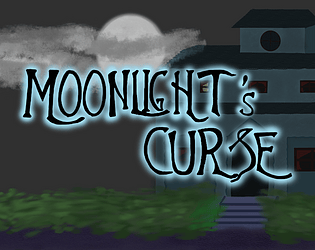

Moonlight's Curse
Moonlight's Curse es un juego que mezcla misterio, maldiciones y mitologia egipcia. Estás sometido a una maldición que te obliga a repetir la misma noche una y otra vez y para poder romperla necesitas la ayuda de un dios egipcio. ¿Conseguirás romper con la maldición familiar? ¿O acabará contigo la maldición?
Jugar